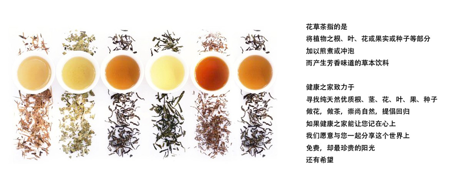

HealtherGroup是以生物资源食品开发、运动智能软硬件、环保生态家居产品开发为三大板块发展的国际化企业。
以“为人类健康服务”为宗旨的HealtherGroup，拥有全球几大有机生态产业园，通过国家GMP认证的食品药品生产线，与厦大基因检测中心、北大医疗研究中心联合研发出了基因检测、慢性病预防与检测等多项专业医疗的产品群。合作医疗遍布中国大陆60万个零售终端、全国三甲医院、妇幼保健医院，并成功与海外医疗服务机构合作，产品行销海外，进入欧美主流市场，惠及亿万人。
以“绿色养生”理念为研发思路，以“双健康理念（人类身心健康及地球的健康）”为目标的Healther花草茶，是一家集茶叶种植、加工、销售、科研，茶文化教育和推广为一体的产业化产品。
专注于健康医疗智能产品的研发、生产和销售，在智能穿戴产品的设计和技术方面有独到的优势，基于各种智能传感器、无线互联技术和生物医学成果，Healther集团不断推出优质、新颖的高科技产品来满足人们对幸福生活、追求时尚的向往。
Healther集团以“健康房•健康造”的健康环保涂料产品进军中国房地产行业，首家编写了健康房的标准。以绿色、生态、环保的姿态崛起于城市之中，成为健康与艺术住宅的典范。